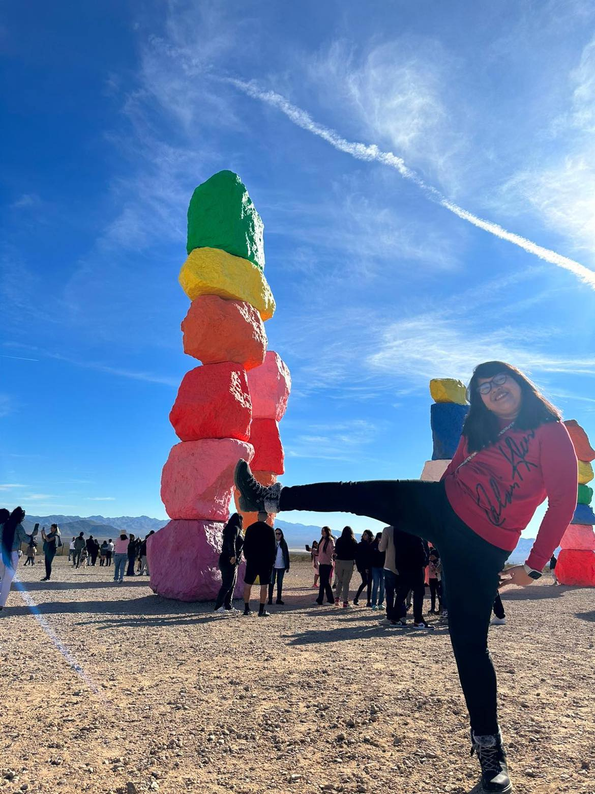
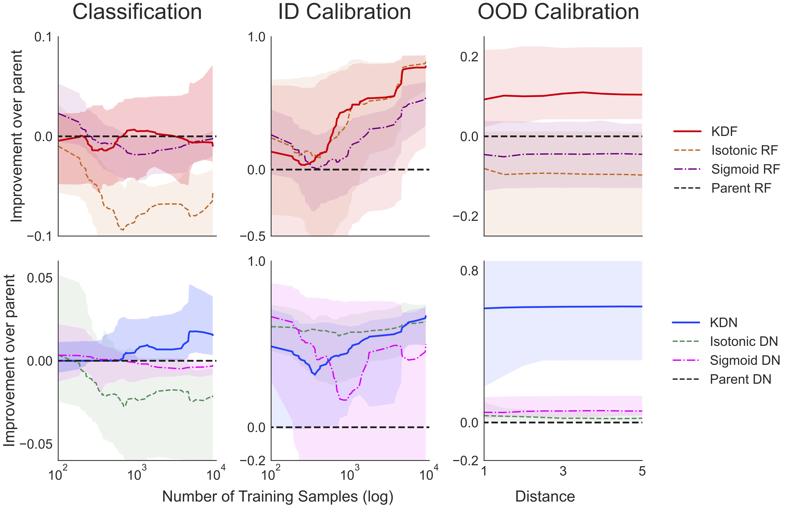
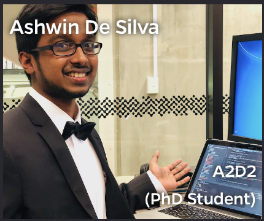

<br> <img src="../images/funding/jhu_bme_blue.jpg" STYLE="width:70%;" /> <br> ## Out-of-distribution Learning <br> <br> <br> Jayanta Dey Research Defense June 5, 2024 --- ## Someone crazy <div class="row"> <div class="column2">  </div> <div class="column2"> <img src="images/lina3.jpeg" STYLE="width:100%;" /> </div> </div> --- ## Some people even more crazy <div class="row"> <div class="column2"> </div> <div class="column2"> </div> </div> <div class="row"> <div class="column2"> </div> <div class="column2"> </div> </div> --- ## Some people close to heart <br> <br> <div class="row"> <div class="column2"> </div> <div class="column2"> </div> </div> --- ### What we've developed - A simple approach to do lifelong learning.<sup>1</sup> - A simple approach to calibrate confidence.<sup>2</sup> <br><br><br><br><br><br><br><br><br><br> <footer, style="font-size: 12px"> (1) Jayanta et al. (2024) A Simple Lifelong Learning Approach. <i>In review</i>. <br> (2) Jayanta et al. (2024) Deep Discriminative to Kernel Density Graph for In- and Out-of-distribution Calibrated Inference. <i>In review</i>. <br> </footer> --- <br><br> ## 1) A Simple Lifelong Learning Approach --- ## Lifelong Learning in AI - Given a .r[sequence] of data associated with different tasks - .r[Forward transfer]: transfer from past tasks to future tasks - .r[Backward transfer]: transfer from future tasks to past tasks - .r[Catastrophic forgetting]: learning new tasks causes performance .r[degradation] on previous tasks --- ## Natural Intelligence - Biological/natural intelligence (BI) is .r[Lifelong]: - learning a 2nd language improves 1st language - learning to run improves walking --- ## A simple learning example - $s =(x_i,y_i)$, $i \in \lbrace 1, 2, \ldots, 200 \rbrace$ - $x \in \mathbb{R}^2$ - $y \in \lbrace 0,1 \rbrace$ - we desire to learn a classifier that minimizes expected misclassification rate --- <img src="../images/rock20/s2.png" style="position:absolute; top:0px; left:100px; height:100%;"/> --- <img src="../images/rock20/s3.png" style="position:absolute; top:0px; left:100px; height:100%;"/> --- <img src="../images/rock20/s3a.png" style="position:absolute; top:0px; left:100px; height:100%;"/> --- ## But there is a problem... "Training on a new set of items may drastically disrupt performance on previously learned items." -- McCloskey & Cohen, 1989 --- ## 30 years later... <img src="../images/rock20/masse1.png" style="width:600px;"/> <img src="../images/rock20/flesch1.png" style="width:600px;"/> <img src="../images/rock20/kirkpatrick1.png" style="width:600px;"/> --- ## Lifelong Learning Schema <br> <img src="../images/learning-schemas.png" style="width:700px;"/> --- ## A computational taxonomy of lifelong learners --- <br><br><br> ## Evaluation Criteria --- ## Transfer The Transfer of learning algorithm $f$ for task $t$ is $$ Transfer\_n^t(f) := \log \frac{\mathcal{E}\_f^t(S^t)}{\mathcal{E}\_f^t(\bigcup\_{i=1}^T S^i)}. $$ <br> Algorithm $ f $ transfer learns if $ ~Transfer\_n^t(f) > 0 $. --- ## Forward & Backward Transfer $$ Forward~Transfer\_n^t(f) := \log \frac{\mathcal{E}\_f^t(S^t)}{\mathcal{E}\_f^t(\bigcup\_{i=1}^t S^i)}. $$ -- <br> $$ Backward~Transfer\_n^t(f) := \log \frac{\mathcal{E}\_f^t(\bigcup\_{i=1}^t S^i)}{\mathcal{E}\_f^t(\bigcup\_{i=1}^T S^i)}. $$ -- <br> Transfer decomposes: $$ Transfer\_n^t(f) := FT\_n^t(f) + BT\_n^t(f). $$ --- ## Performance Summary --- ## Key Insights 1. Avoiding catastrophic forgetting simply means backward transfer is 0, but why stop there? 2. Ensembling representations enables backward transfer > 0 --- ## Limitations 1. Tasks must be discrete 2. Data must be batched into tasks 3. Tasks must be known 4. Feature space must be the same for all tasks 5. Internal representation grows linearly with # of tasks --- <br><br> ## 2) Deep Discriminative to Kernel Density Graph for In- and Out-of-distribution Calibrated Inference --- ## Robotic surgery .r[Question:] Which do you prefer, left or right? --- ## Overcondience in ID and OOD Regions --- ## Existing methods ### In-distribution Calibration - Platt Scaling - Isotonic Regression - Temperature Scaling - Ensemble Methods ### OOD Calibration - Discriminative - Generative --- ## What are we solving? - Address in-distribution (ID) and out-of-distribution (OOD) calibration as a continuum. - Address the confidence calibration problems for both ReLU-nets and random forests from a common ground. - Do unsupervised OOD calibration. - Do OOD confidence calibration for both tabular and vision datatsets. --- ## Problem Formulation - Consider a supervised learning problem with $\mathrm{IID}$ training samples $\{ (\mathbf{x}\_i, y\_i)\}\_{i=1}^n$ - $(X, Y) \sim P\_{X, Y}$, where $X \sim P\_X$ is a $\mathcal{X} \subseteq \mathbb{R}^d$ valued input and $Y \sim P\_Y$ is a $\mathcal{Y} = \{1, \cdots, K\}$ valued class label. - We define, $\mathcal{S}$ as high density region of $P\_{X}$. We want to estimate $g\_y(\mathbf{x})$ such that: <br> $$g\_y(\mathbf{x}) = P\_{Y|X}(y|\mathbf{x}), ~\text{if} ~\mathbf{x} \in \mathcal{S}$$ $$ = P\_Y(y), ~\text{if} ~\mathbf{x} \notin \mathcal{S}$$ --- ## How Deep Discriminative Networks Partition <br> $$\hat{f}\_y(\mathbf{x}) = \sum\_{r=1}^{p} (a\_r^T \mathbf{x} + b\_r)I(\mathbf{x} \in Q\_r)$$ --- ## Our Approach Deep discriminative networks: $$\hat{f}\_y(\mathbf{x}) = \sum\_{r=1}^{p} (a\_r^T \mathbf{x} + b\_r)I(\mathbf{x} \in Q\_r)$$ We replace the affine activations: $$\hat{f}\_y(\mathbf{x}) = \frac{1}{n\_y}\sum\_{r \in \mathcal{P}}n\_{ry} G(\mathbf{x}, \hat{\mu}\_r, \hat{\Sigma}\_r)I(r = r^*\_{\mathbf{x}}) + \frac{b}{n}$$ $$\text{where}, r^*\_{\mathbf{x}} = argmin~\_r ~|\mu\_r - \mathbf{x}|$$ We estimate $g\_y(x)$ as: $$\hat{g}\_y(\mathbf{x}) = \frac{\hat{f}\_y(\mathbf{x}) \hat{P}\_Y(y)}{\sum\_{k=1}^{K} \hat{f}\_k(\mathbf{x}) \hat{P}\_Y(k)}$$ --- ## Gaussian Parameters Estimation $$\hat{\mu}^d\_r = \frac{1}{n\_r}\sum\_{i=1}^{n} x^d\_i I(\mathbf{x}\_i \in Q\_r)$$ <br> <br> $$(\hat{\sigma}^d\_r)^2 = \frac{1}{n\_r}\{\sum\_{i=1}^n I(\mathbf{x}\_i \in Q\_r) (x^d\_i - \hat{\mu}^d\_r)^2 +\lambda\}$$ --- ## Forest and Neural Kernel <img src="images/kernel_flow_diag.png" style="width:650px;"/> --- ## Geodesic Distance: $$d(r,s) = -\mathcal{K}(r,s) + \frac{1}{2} (\mathcal{K}(r,r) + \mathcal{K}(s,s)) = 1 - \mathcal{K}(r,s)$$ --- ## Simulation Experiments --- ## OpenML Data Study  --- ## Vision Data Study $\uparrow$ and $\downarrow$ indicate whether higher and lower values are better. --- ## Conclusions - We measure similarity between polytopes using forest or neural kernel and then measure local similarity using a Gaussian kernel. - Thinking in terms of polytopes is a good way to solve calibration problem in a unified way for both RF and ReLU-nets in both ID and OOD regions. - May not scale for really large datatsets --- ### Acknowledgements <!-- <div class="small-container"> <img src="faces/ebridge.jpg"/> <div class="centered">Eric Bridgeford</div> </div> <div class="small-container"> <img src="faces/pedigo.jpg"/> <div class="centered">Ben Pedigo</div> </div> <div class="small-container"> <img src="faces/jaewon.jpg"/> <div class="centered">Jaewon Chung</div> </div> --> <div class="small-container"> <img src="../faces/jovo.png"/> <div class="centered">Jovo</div> </div> <div class="small-container"> <img src="../faces/cep.png"/> <div class="centered">Carey Priebe</div> </div> <div class="small-container"> <img src="../faces/hao.jpg"/> <div class="centered">Hao</div> </div> <div class="small-container">  <div class="centered">Ashwin De Silva</div> </div> <!-- <div class="small-container"> <img src="faces/mim.jpg"/> <div class="centered">Michael Miller</div> </div> <div class="small-container"> <img src="faces/dtward.jpg"/> <div class="centered">Daniel Tward</div> </div> --> <!-- <div class="small-container"> <img src="faces/vikram.jpg"/> <div class="centered">Vikram Chandrashekhar</div> </div> <div class="small-container"> <img src="faces/drishti.jpg"/> <div class="centered">Drishti Mannan</div> </div> --> <!-- <div class="small-container"> <img src="faces/kwame.jpg"/> <div class="centered">Kwame Kutten</div> </div> --> <!-- <div class="small-container"> <img src="faces/perlman.jpg"/> <div class="centered">Eric Perlman</div> </div> --> <!-- <div class="small-container"> <img src="faces/bcaffo.jpg"/> <div class="centered">Brian Caffo</div> </div> --> <!-- <div class="small-container"> <img src="faces/minh.jpg"/> <div class="centered">Minh Tang</div> </div> --> <!-- <div class="small-container"> <img src="faces/avanti.jpg"/> <div class="centered">Avanti Athreya</div> </div> --> <!-- <div class="small-container"> <img src="faces/vince.jpg"/> <div class="centered">Vince Lyzinski</div> </div> --> <!-- <div class="small-container"> <img src="faces/dpmcsuss.jpg"/> <div class="centered">Daniel Sussman</div> </div> --> <!-- <div class="small-container"> <img src="faces/shangsi.jpg"/> <div class="centered">Shangsi Wang</div> </div> --> <div class="small-container"> <img src="../faces/tyler.jpg"/> <div class="centered">Tyler Tomita</div> </div> <!-- <div class="small-container"> <img src="faces/gkiar.jpg"/> <div class="centered">Greg Kiar</div> </div> --> <!-- </div><span style="font-size:200%; color:red;">♥, 🦁, 👪, 🌎, 🌌</span> --> --- ## Questions?